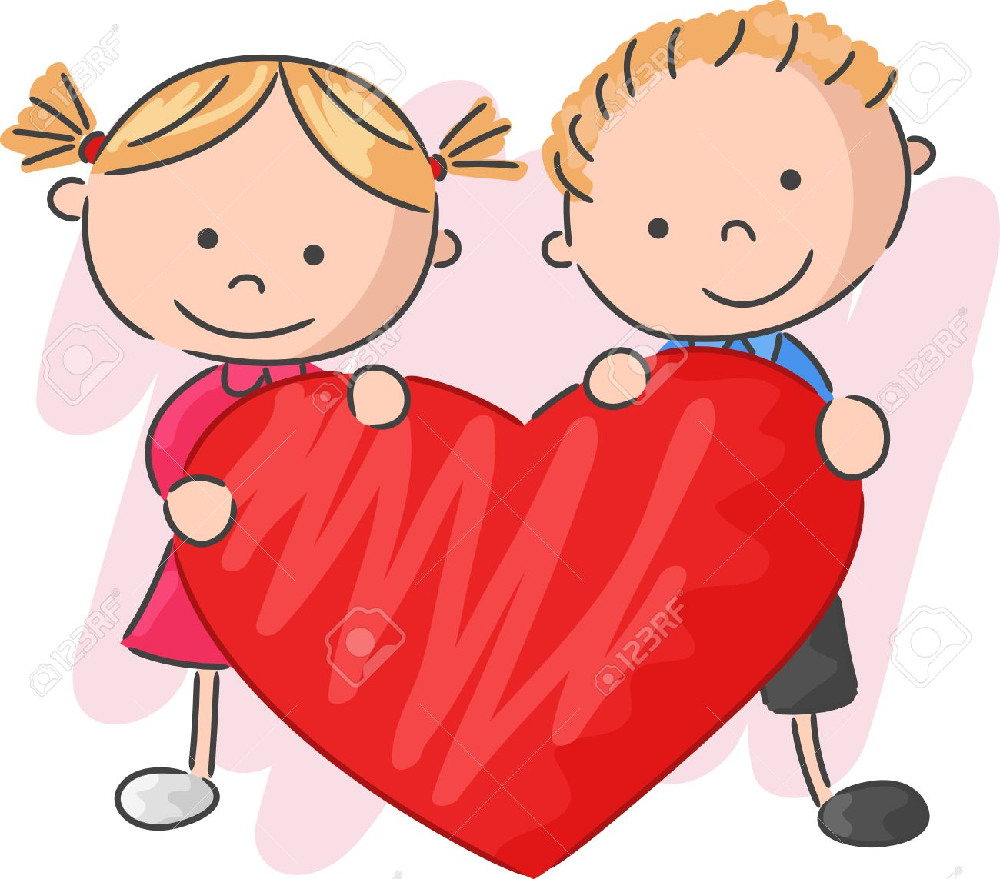

El amor es uno de los valores más importantes. Es la fuerza que nos impulsa para hacer las cosas bien, por eso es considerado un valor que tiene muy clara la diferencia entre el bien y el mal.
El amor es un sentimiento moral, pues nos induce a actuar bien en nuestra vida y con las personas que amamos. Además, nos lleva a tener una vida plena de paz, tranquilidad y alegría, y, en consecuencia, de bienestar con nosotros mismos.

Significados del amor:
- El Amor
- Amor Platonico
- Amor Verdadero